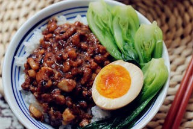

Braised Pork Rice
Braised pork rice is a quintessential dish in Chinese cuisine, made with a tantalizing blend of ground pork, quail eggs, and fluffy rice. The dish strikes a fine balance of richness without being greasy, delivering flavors that are both sweet and salty. Its key highlight is the braised pork, which marries perfectly with the steamed rice. The rice not only complements the meat but also soaks up the delectable, dark red sauce, creating a harmonious dish that's bursting with aroma and flavor.
Ingredients
Main Ingredients
Pork belly/ mince: 400g
Fried shallots: 50g
Shiitake mushrooms: 7 pieces
Eggs: 5 pieces
Seasoning
Star anise: 1 piece
Rock sugar: 1 piece
Ginger: 5 slices
Water: 1 cup
Salad oil: 2 tablespoons
Rice wine: 2 tablespoons
Soy sauce: 3 tablespoons
Dark soy sauce: 1 tablespoon
Salt: 1/2 teaspoon
Five-spice powder: Appropriate amount
White pepper powder: Appropriate amount
Steps
- Place the eggs in cold water in a pot. Once the water boils, cook for 3 minutes and turn off the heat.
- Simmer for 7 minutes, then remove and immerse in cold water to cool. Peel the shells once cooled. The yolk will be soft and flavorful, not overly dense.
- Use pork mince or remove the skin from the pork belly and cut into dices no larger than 1 cm.
- Cut the fresh shiitake mushrooms into dices of the same size as the pork mince.
- Slice the ginger.
- Heat a pot and add oil. Fry the mushrooms for two minutes. Put them into a plate for later use.
- Add oil, slices of giner, and pork mince. Cook until pork is tender
- Add soy sauce, dark soy sauce, rice wine, and water. Cook over medium heat.
- Add the rock sugar, five-spice powder, white pepper powder, and salt. Cook over low heat until the pork belly becomes tender.
- Add the boiled eggs and cook until they absorb the flavors.
- When everything is well-cooked, it's time to serve it over steamed rice.